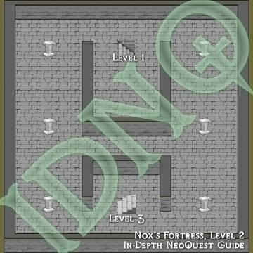

NeoQuest II Maps
Helping you find your way around NeoQuest II...
Meridell | Terror Mountain | Lost Desert | Haunted Woods | Faerieland
| Nox's Fortress, Level 2  Second of the 9 levels of solid NeoQuest II torture. | |
|

Available maps for this act:
- Haunted Woods, West: As much as I would have liked to take the shortcut, it's impossible to walk on.
- Shadow Gulch: The Starting Town.
- Von Roo's Castle, Entrance: Quite big and scary.
- Von Roo's Castle, Dungeon: I've got to get me some of those statues! ("One ACME Evil Statue")
- Haunted Woods, East: Venture further into the swamp... but where is Yoda?
- Cave of Dark Things: "What is in there?" "Only what you take with you." (Follow the slime pools)
- Balthazar's Grove: From the Cave of Dark Things to the Grove. You must enter the Happy Fun Non-Haunted House and talk to the Brain Tree in order to fight the faeries (and move on).
- Happy Fun Non-Haunted House, Level 1: The Brain tree (and another NPC) is just a little bit north from the northern exit. After you talk to them, you can walk further north to return south (weird, huh?) in order not to go through the house again.
- Happy Fun Non-Haunted House, Level 2: You have to walk through here to get to the Brain Tree.
- Nox's Fortress, Level 1: First of the 9 levels of solid NeoQuest II torture.
- Nox's Fortress, Level 2: Second of the 9 levels of solid NeoQuest II torture.
- Nox's Fortress, Level 3: Third of the 9 levels of solid NeoQuest II torture.
- Nox's Fortress, Level 4: Fourth of the 9 levels of solid NeoQuest II torture.
- Nox's Fortress, Level 5: Fifth of the 9 levels of solid NeoQuest II torture.
- Nox's Fortress, Level 6: Sixth of the 9 levels of solid NeoQuest II torture.
- Nox's Fortress, Level 7: Seventh of the 9 levels of solid NeoQuest II torture.
- Nox's Fortress, Level 8: Eighth of the 9 levels of solid NeoQuest II torture.
- Nox's Fortress, Level 9: It's a long way down... if you lose.
- Hubrid's Moutain Range: You don't have to fight Hubrid, but by doing so you'll gain a few levels, and a deeper insight into the plot (or you can just save yourself a lot of time and read the plot in our NPC guide...)
- Esophagor's Swamp: And the boss for this act is...